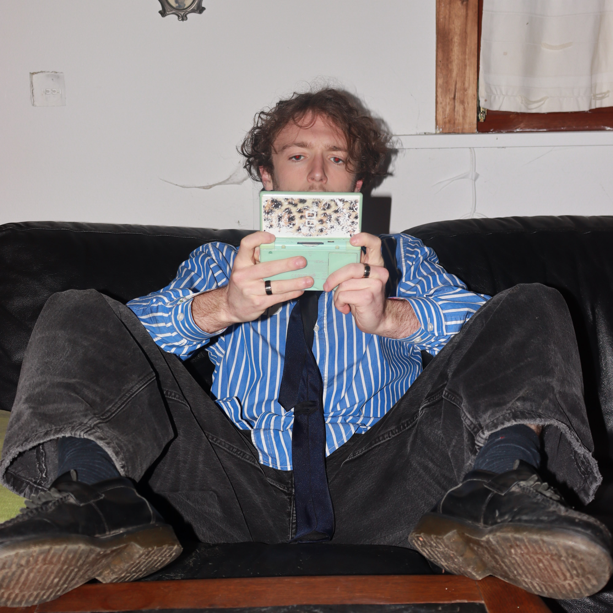
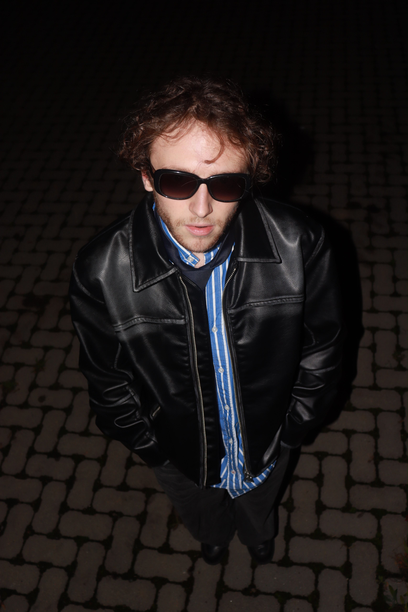
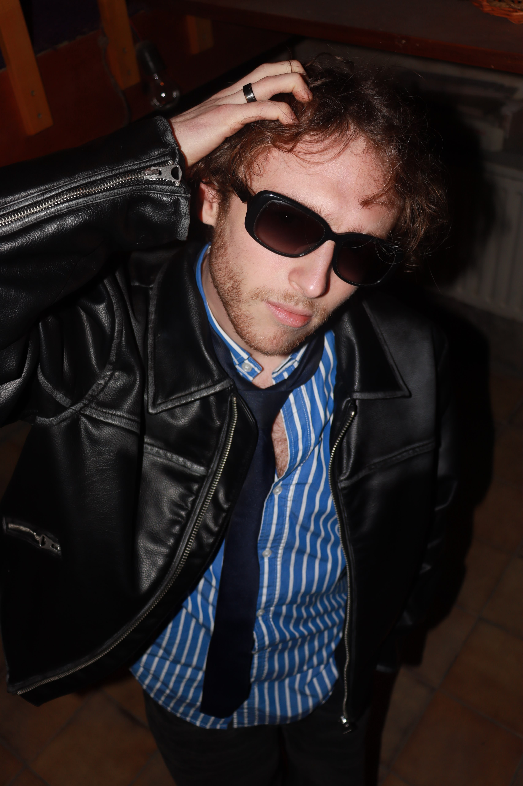
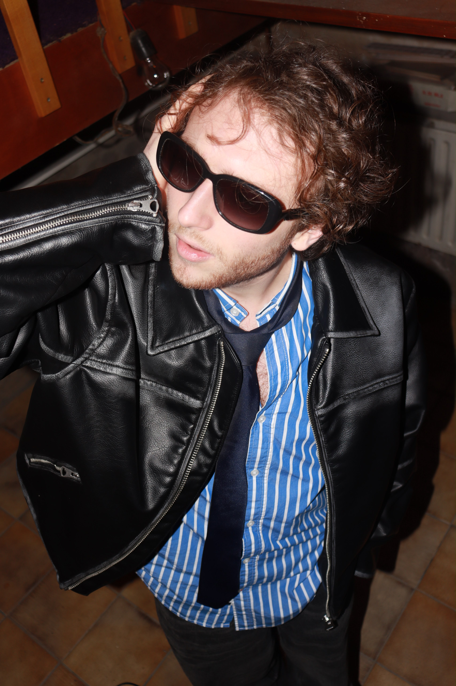

Electronic press kit · Lier, Belgium
BLACKSTAR
SENSUAL DARK POP
A playful mind. A vulnerable heart.
Music that gives you room to feel.
Let yourself
feel something.

Playful. Human. BLACKSTAR.BLACKSTAR is the artist project of Sebast Denolf from Lier, Belgium. Sensual dark pop where playfulness, movement and vulnerability share the same stage.
He can be goofy, spontaneous and unafraid to laugh at himself. But behind that playfulness is a more serious, sensitive side. His songs make space for both: the pleasure of letting go and the honesty of admitting that you do not always have it figured out.
Drawing on pop, soul, funk and electronic influences, BLACKSTAR builds a world around feeling rather than fitting in. A song like MASK explores people-pleasing and the versions of ourselves we create for others. Elsewhere, sensuality and dance become an invitation to drop those expectations.
At its heart is a simple idea: you do not need to be perfect to show up as yourself. BLACKSTAR writes, produces and performs with that same intention — to connect through the parts of being human that we too often keep hidden.
“If you want to dance, dance.
If you want to cry, cry.
If you want to laugh, laugh.”
Debut single
ONE MORE
BREAK.COM
Step into the BLACKSTAR world with ONEMOREBREAK.COM.
Listen on Spotify ↗PRESS PLAY / BLACKSTAR
There’s more behind the song.Enter ONEMOREBREAK.COM ↗Come as you are.
Leave a little freer.
A live band, a love of dance and an artist who wants the room to feel something together.
BLACKSTAR brings his songs to the stage with live musicians. Sensuality and playful energy sit alongside moments of openness, with dance as a thread running through the show.
Between the songs, there is room for connection: the masks we wear, the people we love and the freedom of being yourself. The invitation is simple — let go of what others might think and be part of the moment.
- Format
- BLACKSTAR + live band
- Set length
- 45 minutes
- Based in
- Lier, Belgium
- Technical requirements
- Contact for the current setup
Release show / Aftermovie BLACKSTAR live
Open the aftermovie ↗Selected past shows via VI.BE ↗
Meet BLACKSTAR.
Portraits for press and booking.
Select a photo to download the original.


01 / Night portrait Download ↓

02 / Portrait Download ↓

03 / Looking away Download ↓ 04 / Off duty Download ↓
Photography: elyott_visuals
Bring BLACKSTAR to your stage